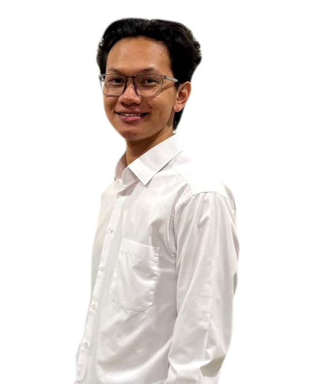
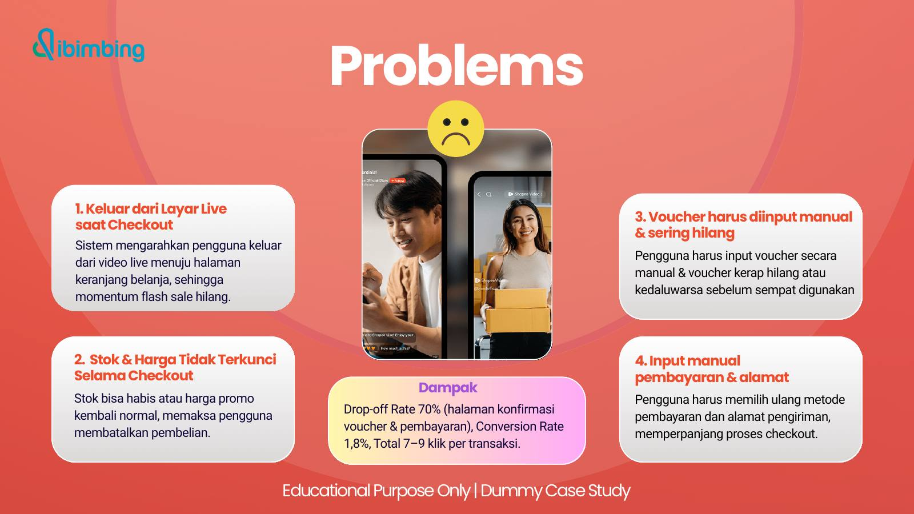
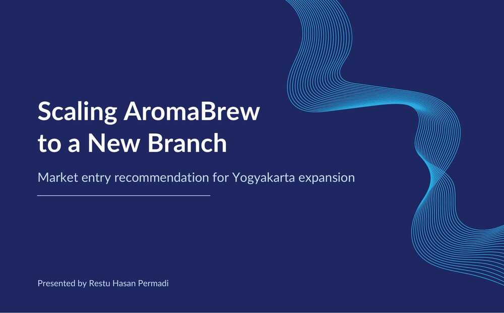
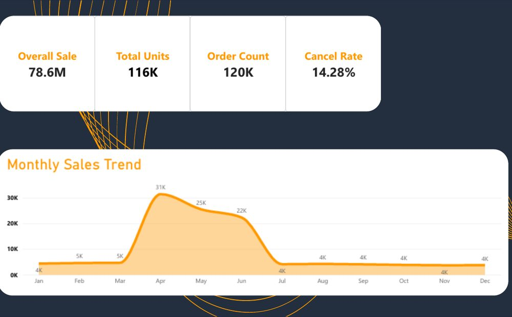
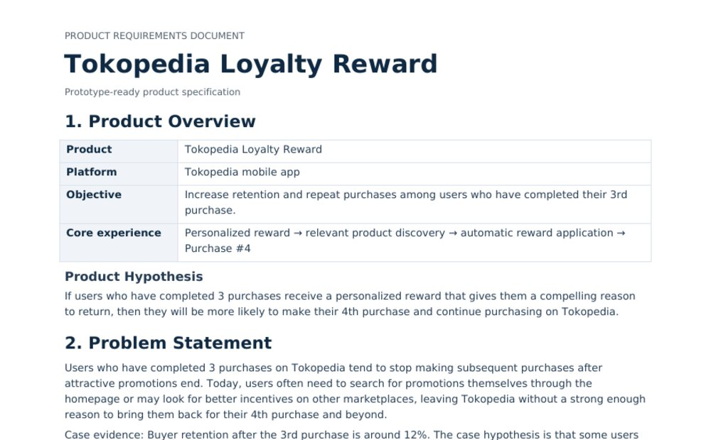
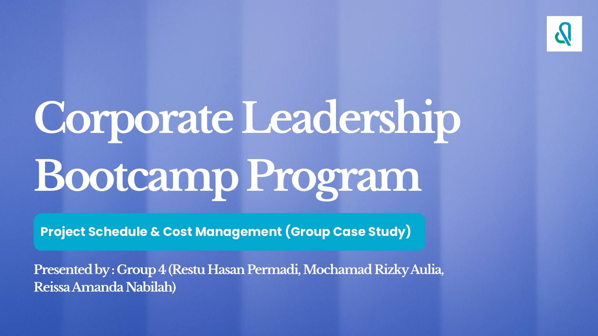

- Researched and analysed 5+ strategic issues to support organisational decision making.
- Wrote 5+ research reports used as primary references in internal discussions.
- Summarised and reviewed 2 books for social media content.
Hey there,
I’m RestuHasanPermadi
I’m training to be a business analyst and product strategist. I study Arabic Literature at Universitas Gadjah Mada and I’m moving into business analysis and product work.
Let’s collaborate
5Case studies
C1English, EF SET
About
What I help with
Most of what's here comes from the Dibimbing Business Analyst and Product Strategy bootcamp: a BRD and FSD, an experiment plan and a PRD from a usability test, a Power BI dashboard, a market-entry recommendation and a project cost review.
Before the bootcamp I did research and documentation work with two organisations. I'm open to remote and project-based work.
5+Strategic issues researched at LEM FIB UGM
45Transactions analysed in the Shopee Live checkout study
12Documents you can open from this site
Power BIExcelGoogle SheetsSQL basicsPython (pandas)FigmaFigJamdraw.ioLovableGoogle Workspace
Root cause analysisRequirements gatheringBRD and FSDPRDProcess mappingStakeholder analysisMarket sizingOKRSolution prioritisation
Skills
Methods, analysis and tools
Skills as listed on my CV, grouped by what they are used for.
Background
My work experience
- Coordinated a cross-division team of 5 members to run programmes and align needs across teams.
- Documented activities in a structured way to support evaluation and reporting to 5 stakeholders.
- Managed content and communication for internal and external publications across 2 main platforms.
Education
- Business analysis fundamentals and the product lifecycle.
- Product research, process mapping and requirement gathering.
- Relevant coursework: Research Methodology, Translation Studies and Sociolinguistics.
- Foundational knowledge in logic and basic programming (HTML and CSS).
Projects
My Works
A selection of bootcamp projects. Each card opens a case study with the work samples.

Shopee Live: Auto-Apply Voucher
Auto-applying the host’s voucher took 42 seconds against 1 minute 6 seconds by hand.Read case study →
AromaBrew in Yogyakarta
A grab-and-go kiosk pays back in about 2.9 months. The café format takes 10.Read case study →
Amazon Sales Dashboard
A 14.28% cancel rate and a sales spike of 6 to 7 times in April to June.Read case study →
Tokopedia Loyalty Reward
A PRD for a reward after a user’s third purchase, aiming to lift retention from 12% to 20%.Read case study →
Leadership Bootcamp: Schedule and Cost
At week 4 the project was on track to overrun its budget by about 48%.Read case study →Smaller exercises
BRDs, a Scrum plan and a refund-flow wireframe from the bootcamp, as PDFs.- Tokopedia Wishlist BRDPDF →A BRD for a wishlist feature: scope, requirements, constraints and stakeholders.
- Technical Problem 2PDF →Three case simulations on product sense, collaboration and prioritisation.
- Scrum plan for a workplace health appPDF →Group exercise: a product goal, a 14-item backlog and three sprints of 19, 21 and 21 story points.
- Request Refund featurePDF →Group exercise: user flow, information architecture and two wireframes, with a 3-day eligibility rule.
- Payment Link via Midtrans APIGroup assignment: compared integration options, planned sandbox to go-live and tested success and expired payments.
Recommendations and references are kept on my LinkedIn profile.
See my LinkedInOthers